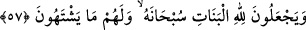
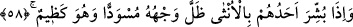
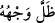
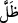

kendilerine lütfederek kolaylaştırdığı ibâdet ve tâatlardan onlara riyâ yoluyla pay
ayırırlar. Onlar ise bu kişilerin kendilerine karşı içlerinde besledikleri vehim ve
iftiralardan habersizdirler.
Riyâ için hırka dikmek kolaydır
Satabilirsen sen onunla Cenâb-ı Hakk’ı aldat!
57. Onlar, kızların Allah’a âid olduğunu iddiâ ediyorlar. Hâşâ! Allah bundan
münezzehtir. Beğendikleri de (erkek çocuklar) kendilerinin oluyor.
“Onlar, kızların Allah’a âid olduğunu iddiâ ediyorlar.” Bunlar Huzâa ve Kinâne
kabîleleridir. Onlar meleklerin Allah’ın kızları olduklarını söylerlerdi. Bazı kâfirler,
Hak Teâlâ’nın cinlerle musâheret ettiğini ve meleklerin doğduğunu söylerdi. Biz böyle
bir şeyden Allah’a sığınırız.
“Hâşâ! Allah bundan münezzehtir.” Allah onların söyledikleri Allah Teâlâ’nın
kızları olduğu iddiâlarından pâktır.
“Beğendikleri de” erkek çocuklar “kendilerinin oluyor.” yâni onlar erkek
çocuklarını kendilerine seçerlerdi.
Sonra Allah, onların kızları nasıl kerih gördüklerini vasfederek şöyle buyuruyor:
58. Onlardan birine kız müjdelendiği zaman öfkelenmiş olarak yüzü kapkara
kesilir.
“Onlardan birine kız” yâni kızının doğduğu “müjdelendiği zaman” yâni kâfirlerden
birine senin kızın doğdu diye haber verildiğinde “öfkelenmiş olarak” kız çocuğu
doğurmasından dolayı kadına öfkeyle dolu olarak kavminin arasında “yüzü kapkara
kesilir.” Yüzün kararması, üzüntü ve utanmadan kinâyedir.
“
” yüzü kapkara olur/kesilir, mânâsında bir halden bir hâle dönmeyi ifâde eder.
Ya da “ ” fiili asıl mânâsında ‘gündüz bir işi yapmak’ demektir. Buna göre âyet ‘gün
boyunca yüzü kapkara olur’ anlamındadır. Çünkü doğumların çoğu genellikle geceye
rastlar. Haberleri ise gündüze kalır. Özellikle kız çocuğu ise. İşte kızı olduğu
müjdelenen kimsenin de gündüzü kapkara olurdu.
Rüya tâbircileri, bu âyeti delil getirerek rüyada yüzünün siyah olduğunu gören veya
öyle görülen kimsenin rüyasını, karısının kız çocuğu doğuracağı şeklinde